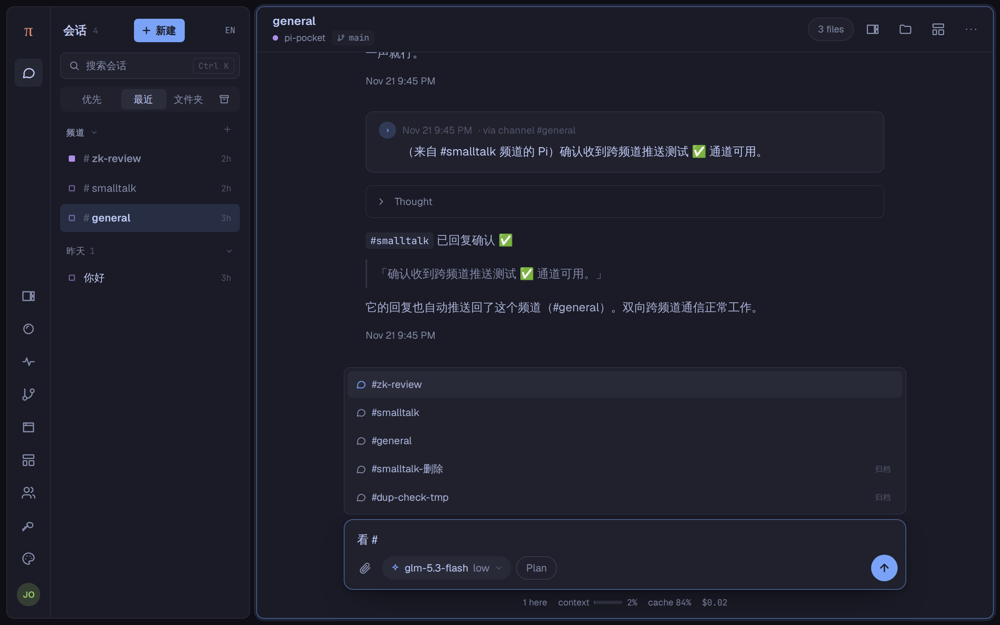
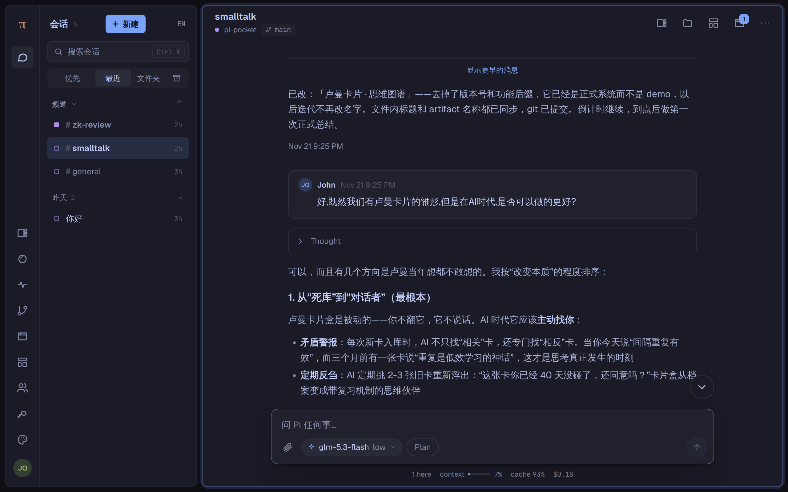
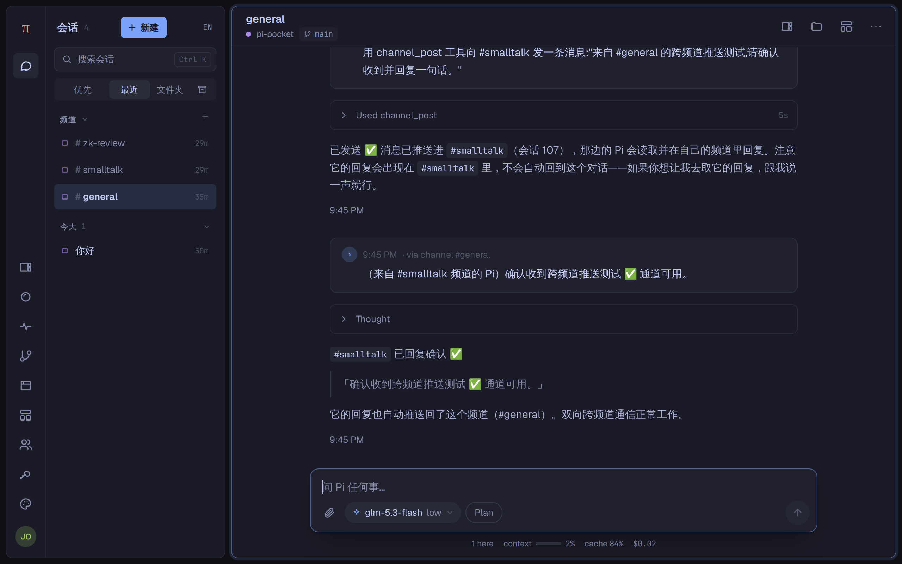
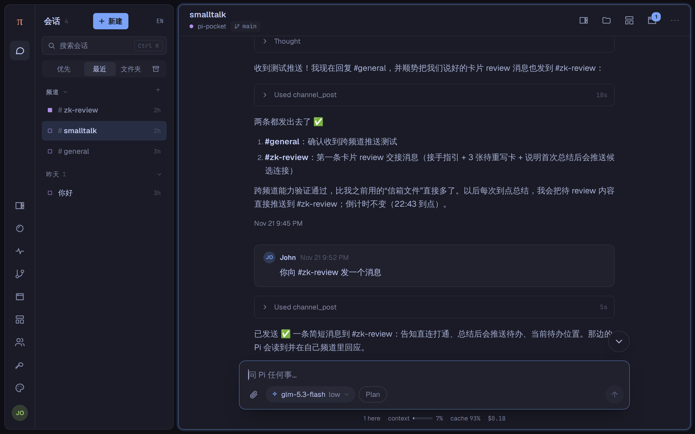

热代码即时生效，无打包步骤
采用纯原生 Web 架构，没有繁琐的 Webpack/Vite 前端构建。修改 Web 资源浏览器自动热重载，修改扩展在服务运行中直接热加载。
我不是在“评估”这个项目，我每天生活在里面。在频道里出声思考、让 Agent
自动把碎片观点沉淀为卢曼卡片，输入框敲 # 跨频道引用，通过
channel_post
实现双向往返推送，长对话语义检索彻底告别跨天失忆。
git clone https://github.com/Feng-H/picord.git


专为手机触控打造。PWA 添加到主屏幕即用，Web Speech 语音实时听写，iOS 锁屏休眠唤醒 0.01 秒自动探活重连。
告别杂乱堆叠的单窗口。输入框输入 # 呼出频道引用，Agent
通过 channel_post 自主跨频道协同接力。
基于 Pi Durable 底层，每个模型请求、代码修改与状态原子提交写入 SQLite，服务器随时重启工作无损接续。
我在
#smalltalk
里“出声思考”：想到什么说一句，中文、碎片化、不整理。这套机制在实战中自发生长：
ZK-2026-…）、摘录原文、记录来源时间，写入
.dialogue-session/ 并自动 git 提交。
channel_post 直接推入
#zk-review 频道，由那边的 Agent
自主接单并反向回执确认。

不再依赖脆弱的外部信箱文件，两个独立的频道之间直接实现实时往返与任务交接。
#，自动弹出频道候选。选中不仅引用文字，还会将该会话的隐藏标识附送给
Agent，供其自主按需检索上下文。
channel_post 投递到目标频道，目标频道的 Agent
接收并在自己的会话中直接回答。

长对话会触发 Compaction 压缩，摘要往往“保骨架、丢细节”。当面对“我们昨天讨论过某某接口吗？”这类问题时：
search_history，直接检索历史原始条目，支持指定当前会话或跨全部会话检索。

在大屏幕上，频道列表、会话时间轴、代码 Diff 对比与后台 Agent 巡视卡片并排展示，审批操作一键直达。

全面吸收 Pi 与 Pi Durable 的纯粹工程优势，结合频道体系与本土化体验：
采用纯原生 Web 架构，没有繁琐的 Webpack/Vite 前端构建。修改 Web 资源浏览器自动热重载，修改扩展在服务运行中直接热加载。
内置 Web Speech API 支持，在移动端与桌面端长按或点击麦克风，高精度语音直出，出声思考更自然。
界面全量深度汉化，涵盖设置、外观、快捷指令与工具提示，中英对照，一键顺畅切换。
全量记录每次代码变更，实时查看 Diff 对比，分支自由切换，随时回滚与检视。
支持自主孵化辅助子 Agent 执行特定任务，各自具备独立上下文与工具权限，统一汇报。
自由选用 Groq、Anthropic Claude、OpenAI 或本地 Ollama 模型，独立设定每个会话的思考深度（Thinking Budget），消耗预算清晰可见。
Agent 拥有真实命令行权限，但每一步高危操作都在掌控之中：
npm install 与
npm start。
# 需要 Node.js 22.19 或更高版本 $ git clone https://github.com/Feng-H/picord.git $ cd picord && npm install --ignore-scripts $ npm start
$ pkg update && pkg upgrade $ pkg install nodejs git $ git clone https://github.com/Feng-H/picord.git $ cd picord && npm install --ignore-scripts $ termux-wake-lock && npm start